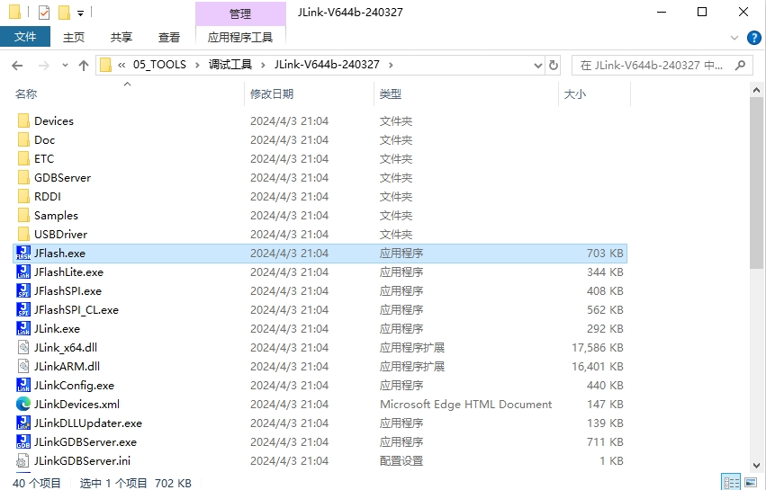
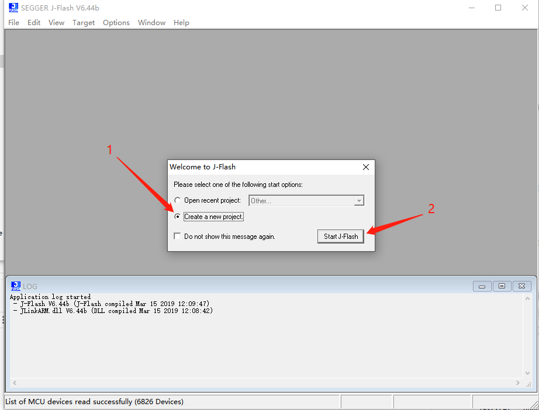
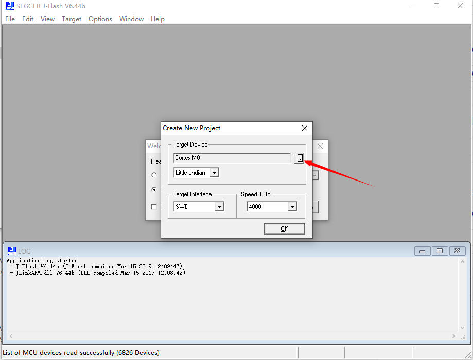
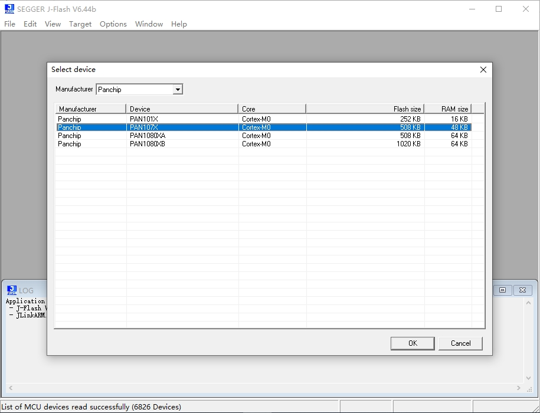
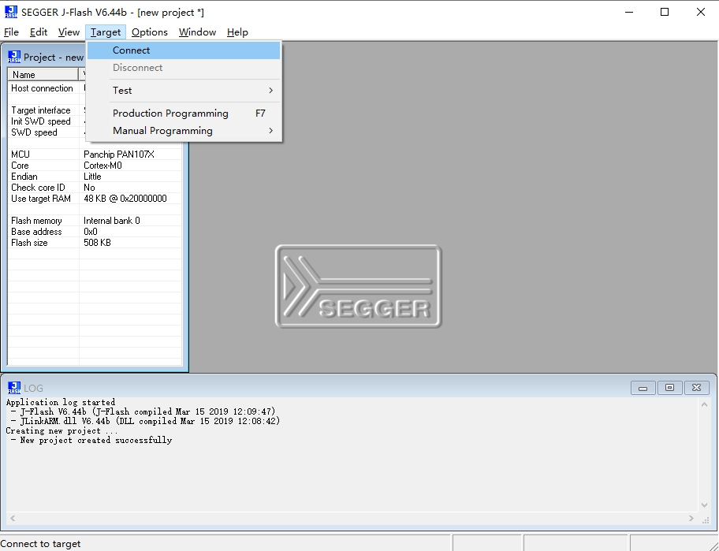
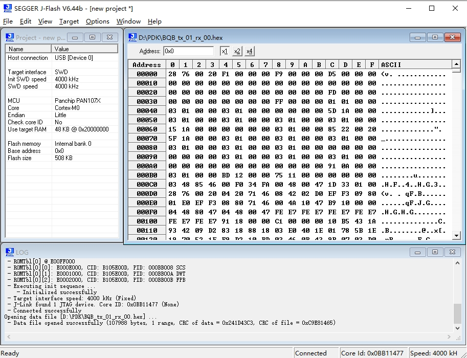
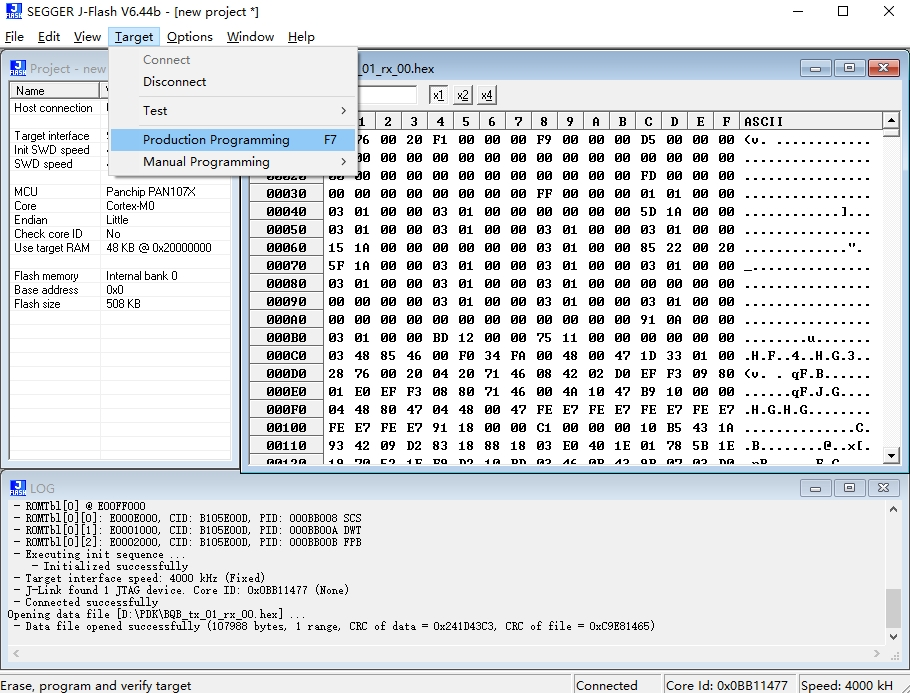
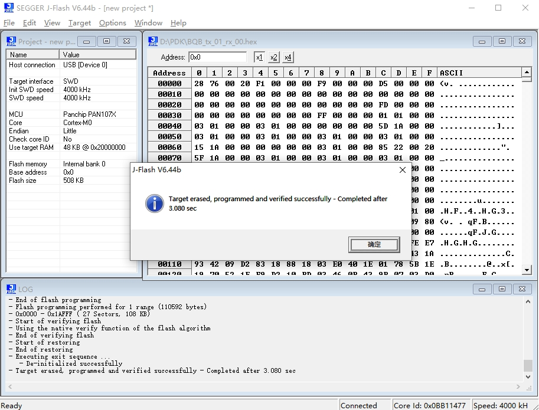

JFlash烧录¶
本文介绍使用 Segger J-FLash 工具烧录固件到 PAN107x SoC 的方法。
在使用 J-Flash 烧录工具前，请确保 J-Link 硬件与 PAN107x 芯片的 SWD 连接正常。
J-Flash 工具操作步骤如下：
打开 PAN107x NDK/ZDK 中的 J-FLash 烧录工具
在
<PAN107x-DK>\05_TOOLS\调试工具\JLink-V644b目录下找到 “JFlash.exe”
J-Flash 目录路径¶
双击
JFlash.exe打开软件，在欢迎界面选择Create a new project，然后点击Start J-Flash按钮
J-Flash 欢迎界面¶
在新建工程界面，点击
...，进入 Device 选择界面
新建工程界面¶
在
Manufacturer中选择Panchip，然后找到并选择名为 PAN107X 的 Device，点击OK按钮确认
Device 选择界面¶
点击菜单栏
Target - Connect，连接目标芯片
连接目标芯片¶
拖动待烧录固件至 J-Flash 软件右侧的空白区域

载入待烧录固件¶
点击菜单栏
Target - Production Programming（快捷键F7），烧录程序至芯片
开始烧录¶
烧录完成后，会有弹窗提示

烧录完成¶
注：烧录完成后程序不会立刻执行，需要手动复位一下芯片，或重新给芯片上电。